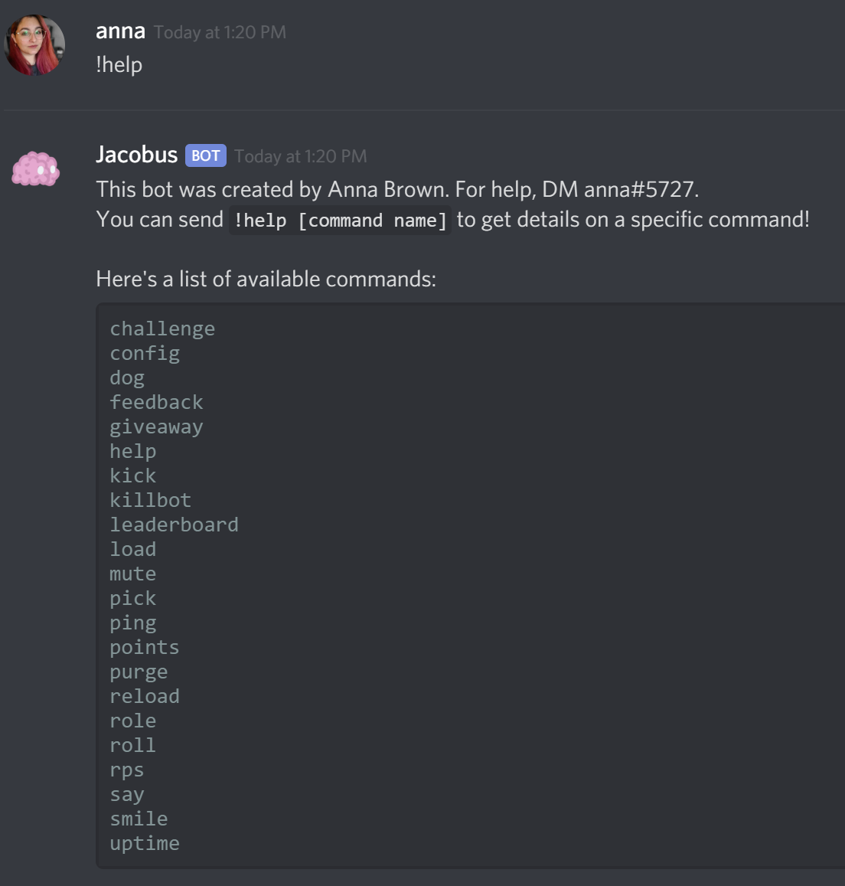

Jacobus the Discord Bot
To help manage our growing communities, I developed a custom Discord bot, Jacobus, to help make management a bit quicker. This bot, named after the old campus student center (which has since been torn down) allows users to self-assign roles, look at cat pictures, and play games to earn points. These points are compiled into a leaderboard, and the top 3 members at the end of each semester get prizes.
Commands
Development Process
When I began developing Jacobus, I didn't know anything about JavaScript or Python, the two most popular languages for developing Discord bots. I decided to go for JavaScript for developing because it was applicable to web development, something I'm already learning about in my spare time. There also seemed to be more resources for Discord.js.
Version 1.x.x
The beginning framework of the bot was created following An Idiot Guide's tutorial. Once I had some basics programmed, I let my creativity determine the path of development. I knew I wanted self-assignable roles, so I found a quick YouTube tutorial for that. I also wanted to be able to schedule messages, since Discord still doesn't offer this natively. I found a JavaScript function that could set a timer, and I also learned how to get the current date and time. Development continued like this until I ran into two major problems: Having one file for the whole bot was becoming a bit confusing, and I wanted certain commands to act differently depending on which server they were used in.
Version 2.x.x
Back to YouTube I went, this time looking for command handler tutorials. I found one, and it was much simpler than I expected to convert my existing file (then around 1000 lines) to a much cleaner format. It also allowed me to have a dynamic help command, as well as launch and relaunch individual commands without restarting the main process. This was especially exciting to me, as it meant less downtime for updates. For the server-specific settings, I had a bit of trouble. Eventually, I learned about JSON, and decided to store user data in a separate JSON file. The file is dynamic, and data for individual users is sorted by server. When a user leaves a server, their data for that server is deleted, and a new entry is only created when they send their first command. Server-specific settings are also stroed in a JSON file, and include data like the welcome message, the name of the admin role, and the list of commands allowed on the server.